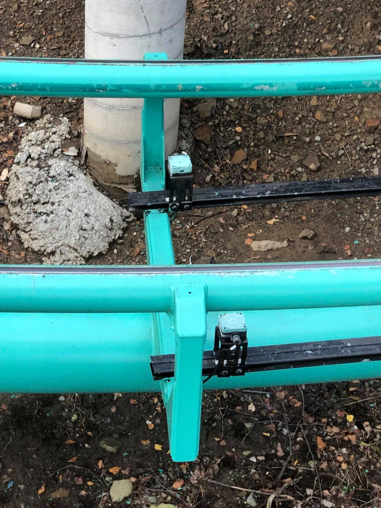
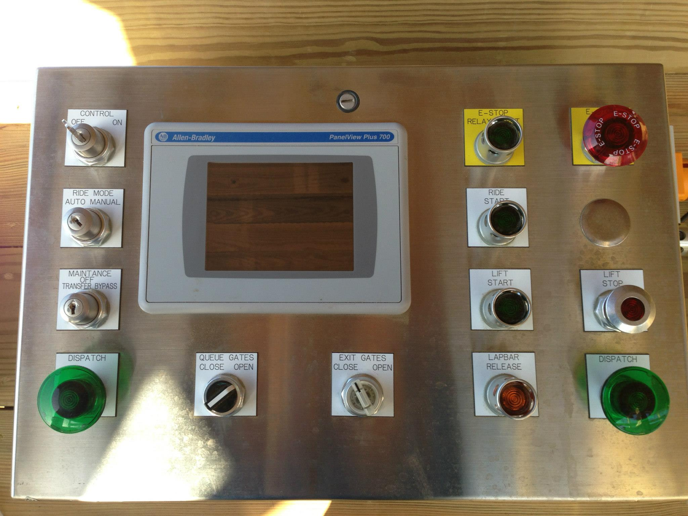

Engineering Primer
Peripheral Devices

Along a ride's course and structure exists a network of sensors and actuators. High-power AC or DC motors may be used to convey ride vehicles through controlled sections of track. A prime example of this is the lift chain motor. In modern systems, these motors are monitored and controlled by variable frequency drives. Inductive proximity sensors detect metal components on ride vehicles, and they are positioned at crucial points in the track layout to allow for precise monitoring of train position and motion. Pinch brakes and eddy current brakes are often found in controlled sections of track, and they can be actuated open or closed using pneumatic pressure and electrical control signals.
Operator Consoles
Although most modern ride control systems are largely automatic in their operation, operators need to be present to provide forms of acknowedgement that allow the ride to function properly. There is typically one main operator panel, as well as a collection of auxiliary panels for various enabling and maintenance functions. These consoles typically contain buttons and switches that allow operators to turn on control power, select an operation mode, stop/start the lift chain motor, dispatch/advance ride vehicles from/to the station area, lock/unlock restraints, and open/close the platform gates. In modern systems, the main operator panel typically contains a touchscreen HMI (Human-Machine Interface) that allows for convenient monitoring of the ride and the completion of various specialty tasks.
Programmable Logic Controller (PLC)
At the core of all modern ride control systems is a programmable logic controller (PLC). A PLC is a ruggedized embedded computer typically used in industrial applications. They tend to be of modular construction, allowing for a rack-type system to be assembled from a power supply, processor, network scanners, and input/output (I/O) modules. Most of the peripheral devices discussed earlier are wired into the system as inputs or outputs of these modules. The processor runs a program written by the controls engineer in a graphical programming language known as 'ladder logic' due to a close aesthetic resemblance to the rungs of a ladder. In the amusement industry, it is quite standard for control systems to utilize safety-rated hardware and software that features additional built-in redundancy that standard equipment lacks.
Electrical Cabinetry

A ride's PLC is typically mounted in a large metal cabinet among other electrical equipment. Located inside a special electrical room, the cabinets also contain power supplies, I/O modules, variable frequency drives for motors, a main power disconnect, and much more. For some rides, it makes sense to distribute the I/O modules at locations out in the field. Field devices are wired to these distributed modules as discrete inputs or outputs, and then the data can be transmitted and received by the PLC processor in the main cabinet over Ethernet. All field devices in the network meet at an Ethernet switch which bridges communication between the those devices and the processor.